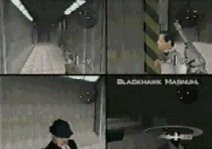
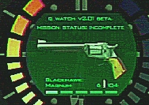
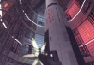
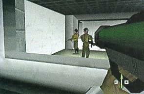
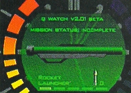

Tous les Noms d'Armes qui ont changé l'ont été car Rare n'a surement pas eu l'autorisation de les utiliser. Voilà pourquoi on trouve ces noms : AK47, M16 A2, PPK, etc (Merci à Bruno Cacheux).
- AR33 : il s'appelait M16-A/2 Commando Rifle, et on le retrouvait dans pas mal de Niveaux (Statue, Silo).
- Tazer : il était BIEN différent de celui que l'on connait maintenant. On dirait plus une Arme de Perfect Dark tellement elle est Bizarre ! Il n'y a pas d'autres images le montrant.


- Lance-Roquettes : pas mal différent lui aussi.
- KF7 : il s'appelait avant AK47 et il est visible sur pas mal de Photos, notamment dans Archives. L'Arme était carrément plus carrée que celle de la Version Finale. La Meilleure Photo du KF7 Beta figure derrière la Boite de Goldeneye, avec des Russian Infantry, des Vitres différentes de la version Finale et du Sang !


- Cougar Magnum : il s'appelait Blackhawk Magnum.


- Couteaux : ils s'appelaient simplement Knife et pas Throwing Knife ou Hunting Knife.
- Laser : il s'appelait Military Laser. Il apparaissait dans beaucoup plus de Niveaux (meme le Barrage !) et a été uniquement laissé dans Aztec. Un Internaute averti (Verdeloos) m'informe qu'en Mode Solo, le Laser s'appelle Moonraker Laser alors qu'en Multiplayer il se nomme simplement Military Laser.


- Mine : avec entre Parenthèses Timed.
Objets Beta
En entrant ces Codes, lorsque vous ramasserez l'Arme du Premier Garde que vous tuerez, elle se changera en l'objet voulu. Entrez le Code 811FA522 00XX et changez le XX par un des Chiffres ci-dessous ! On peut aussi faire ça dans Runway, avec le Premier Garde derrière vous, mais le Code est cette fois-ci 801D9258 00XX !

- 21 - BOMB CASE : On peut poser cette Valise comme une Mine. Rien de bien extraordinaire mais bon ! Attention, elle explose comme une Timed Mine !

- 2C - WEAPON CASE : A quoi pouvait bien servir cette Valise ? A porter ses Armes ? Ou fallait-il la récuperer dans un Objectif ?

- 30 - MICRO CAMERA : Voilà un Objet interessant, prévu à l'origine semble-t-il pour le Casino. On peut en poser tant que l'on veut si vous avez des Munitions Infinies !

- 33 - POLARIZED GLASSES : Alors là je sais pas, à moins que ce soient des Rayons-X comme pour Perfect Dark ?

- 36 - GAS KEYRING : Il parait que cet objet était utilisé dans un Film des James Bond : The Living Daylights.

- 39 - WATCH COMMUNICATOR : Il parait que c'était pour contacter Trevelyan dans Facility.

- 3A - WATCH GEIGER COUNTER : Cet Objet était utilisé dans Thunderball. Comment il l'était dans Goldeneye, on en sait rien !

- 3B - WATCH MAGNET REPEL : L'Opposé de la Montre Magnétique. Mais pour quelle utilisation ?! On n'en sait rien non plus.

- 43 - PLANS : Des Plans ? Mais de quoi ? Du Silo ? Rare n'a jamais dit que Oroumov les avait... Mystère.

- 46 - MAP : Ce sont les Plans du Bunker, mais sous un autre nom.

- 47 - AUDIO TAPE : Un Objet à récuperer ? Pourquoi pas !

- 52 - YALE KEY : Cette Clé existe aussi dans le Jeu, mais sous un autre Nom.

- 53 - BOLT KEY : Un Nom provisoire sans aucun doute.
Toutes les valeurs possibles
Et maintenant, juste pour le Fun, tous les Trucs en quoi changer l'Arme que vous ramassez !
00 - . (Juste un tiret, comme la Clé du Silo) 01 - Unarmed 02 - Hunting Knife 03 - Throwing Knife 04 - PP7 05 - PP7 (Silenced) 06 - DD44 07 - Klobb 08 - KF7 Soviet 09 - ZMG (9MM) 0A - D5K Deutsche 0B - D5K (Silenced) 0C - Phantom 0D - AR33 Assault Rifle 0E - RC-P90 0F - Shotgun 10 - Automatic Shotgun 11 - Sniper Rifle 12 - Cougar Magnum 13 - Golden Gun 14 - Silver PP7 15 - Gold PP7 16 - Laser 17 - Watch Laser 18 - Grenade Launcher 19 - Rocket Launcher 1A - Grenade 1B - Timed Mine 1C - Proximity Mine 1D - Remote Mine 1E - Detonator 1F - Taser 20 - Tank 21 - Bomb Case 22 - Plastique 23 - Flare Pistol 24 - Piton Gun 25 - Bungee 26 - Door Decoder 27 - Bomb Diffuser 28 - Camera 29 - Lock Exploder 2A - Door Exploder 2B - Briefcase 2C - Weapon Case 2D - Safe Cracker 2E - Key Analyzer 2F - Convert Modem 30 - Micro Camera 31 - Bug Detector 32 - Guidance Data 33 - Polarized Glasses 34 - Dark Glasses 35 - Credit Card 36 - Gas Key Ring 37 - Datathief 38 - Watch Identifier 39 - Watch Communicator 3A - Watch Geiger Counter 3B - Watch Magnet Repel 3C - Watch Magnet Attract 3D - Goldeneye Key 3E - Black Box (Statue, Archives) 3F - Circuit Board 40 - Clipboard 41 - Staff List 42 - Red Dossier 43 - Plans 44 - Spy File 45 - Blueprints (Plans de l'Helicopter) 46 - Map 47 - Audio Tape 48 - Video Tape (Cassette Vidéo du Film Goldeneye) 49 - DAT 4A - Spool Tape 4B - Microfilm 4C - Microcode 4D - Lectre 4E - Money 4F - Gold Bar 50 - Heroine 51 - Keycard 52 - Yale Key 53 - Bolt Key 55 - Controller 56 - Explosive Gun 57 - Explosive Gun 58 - Token






